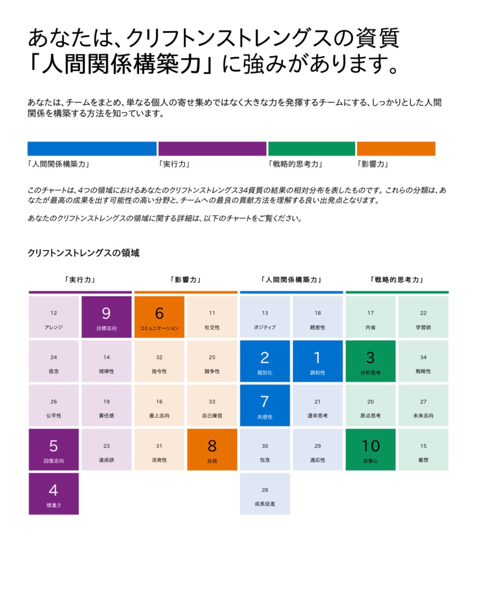
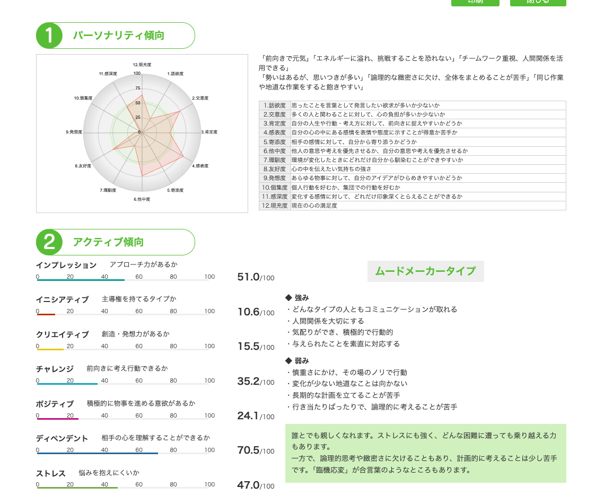

相手を傷つけない言葉を、
誰よりも丁寧に選べる人。
2026.05.17 ・ 梅田のコメダ珈琲店にて
受けてきてくれた診断、ぜんぶ大切に貼っておきました。あとで何度でも読み返してください☕


それぞれの資質がどんな特徴を持っていて、まっちちゃんの中で セッション中、どう動いていたか。本人の言葉と一緒に並べました。
トップ5の影に隠れがちだけど、6〜10位もしっかり混ざっています。
感じたことを言葉にして伝えるのが得意。話術に優れ、人とつながることで満足感を得る。
場の空気や人の気持ちに敏感。言葉になる前の感情を察知できるアンテナを持つ。
「あなたがいてくれてよかった」と言われると最高に嬉しい。必要とされることがエネルギー。
ゴールが定まると一直線。明確な目標があると集中して力を発揮する。
気になった情報やモノを集める。集めたものが誰かの役に立つと喜びを感じる。
CQ Finder の結果は、ストレングスとは違う角度から まっちちゃんを照らします。ディペンデント70.5 ── これが、いちばん突き抜けた数字でした。
「自信がない」「迷惑かけてないか」── 何度も口にしてた言葉。消そうとしなくていい。気づいておくだけで、振り回されにくくなります。
セッションで「あ、それやってる」と何度も話してた所作たち。ぜんぶ、資質の合わせ技から生まれている動きです。
カバンに何でも入ってる準備魔。「ない、ない、ない」と困ってる人にサッと出せる。慎重さ4位の愛されキャラ。
「寂しすぎて一人暮らしはとても大変」。共感性7位 × ディペンデント70.5 の合わせ技で、誰かが近くにいる安心感が栄養になる。
もらってばかりが落ち着かない。これは 「人の負担になりたくない」愛情センサー が、人より精密に働いてる証拠。
「終わった？」と連絡が来る前に終わらせて、「めっちゃ助かったわ、ありがとう」と言われると感動。自我8位がいちばん輝く瞬間。
裏千家中級。8年続けた茶道を、自分の言葉と画像で外に届けてる。個別化2位 × コミュニケーション6位の発露。
大学時代の穏やか系には 「めっちゃ穏やかな超スロー」、社会人の関西ノリ早い系には 「活発な人」に。両方できる稀有な人。
2ヶ月かけてやっと名前と物の配置を覚えたのに、6月に異動。「めっちゃあります、どうしよう」と即答。慎重さ × 個別化の現れ。
「言葉を取り消せないから、ずっと気にしてる」。回復志向5位の影。1分ルールで卒業していい。
エンジンが気持ちよく回る環境と、止まってしまう環境。両方を知っておくと、自分を扱いやすくなります。
コーヒー × トーストみたいに、資質も組み合わせで化学反応を起こします。
場の調和を乱したくなくて、一人ひとりの違いを見て、感情まで察知する三段構え。「お客さんを見てクーポン案内を変える」動きが生まれるのは、このコンボのおかげ。
根拠を確かめて、リスクを見て、問題があれば直す。これは 命を扱う仕事の本質。3〜5位にぎっしり集まってる時点で、あなたは薬剤師になるべくしてなったと言っていい。
関西弁の温度で人を和ませて、「あなたがいてくれてよかった」が動力源になるタイプ。ライバー興味も、Instagram運用も、ぜんぶこのコンボの発露。
6年がかりの薬剤師国家試験合格は、まさにこのコンボ。FP・高配当株・NISA・クロコ習得も同じ動き方。「学んだことを生活に引き寄せる」のが得意。
大学の穏やか系と社会人の関西ノリ早い系、両方に 「化ける」 ことができる。これは 「八方美人」じゃなく「相手を大切にする技術」です。
セッションでの 「二人に共通するのが、相手を傷つけないこと」 発言。あなたの安心センサーは、自分が 誰かを傷つけたくない から育った力。
セッション中、ふと出てきた本音の言葉たち。あとで読み返したい一節を、そっと残しました。
確かにそういう行動をとるんやな。全然悪いことじゃないんや。自分がそういう特性を持ってるから、こういう行動をしたがる。
「あなたがいてくれてよかった」と言われると最高に嬉しいです。本当にその通りです。
二人に共通するのが、相手を傷つけないこと。
めっちゃ仲良い人はできるんですけど、時間が経つとだんだん「なんか合わへんな」って思ってしまって、長く続かない。自分の特性なのか、性格が悪いのか。
めっちゃあります。場所も変わり、人間関係も変わり、どうしよう。
忘れたら嫌やん。怒られるほうが怖いし。
無意識でやってたなって思うのは、お客さんを見て「この人はゆっくり対応しても大丈夫そう」って思った時はクーポン案内を積極的にして、めっちゃ急いでる人には速攻で会計終わらせよう、みたいなのをやってる。
国試合格・社会人スタート・ドラッグストア配属・本社テスト・6月店舗異動・ライバー興味… すべて同時進行のいま。
「やらなきゃ」じゃなくて、読んだ瞬間に「あ、こういうこと、私してたかも」って気づくだけでOK。一個も実践しなくていい。知っておくだけで、心の景色がちょっと変わります。
「迷惑かけてないかな」が浮かんだ瞬間に、直そうとしなくていい。「あ、また私のセンサー、動いてる」って 気づくだけ。それだけで、ぐるぐるが少しゆるみます。気づく → 観察 → ちょっとニヤッとする、の3段階で充分。
回復志向5位 × 個別化2位 × 共感性7位 ── 「人の小さな違い・困りごとに気づける」力を、世の中はずっと探してる。気が利く人がいなくて困ってる場所、思ってる以上に多いんです。「私には何もない」じゃなく「私には これがある」。まず、そう思っていてください。
大きなことしなくていい。「あ、この人ちょっと迷ってそう」って気づいた瞬間に、ちょっと声をかけてみる。困ってそうな後輩に、ドラえもん屋のカバンから何か出す。それだけで個別化と回復志向がふわっと動く。誰かの「ありがとう」が、あなたの自我を満たすご褒美になります。
「いえいえ、私なんて…」って返したくなったら、ぐっと飲み込んでみる。代わりに 「えへへ、嬉しいです🍵」「ありがとうございます」 だけ返す。受け取る練習は、贈る練習。あなたが受け取ってくれたら、相手も「贈ってよかった」って嬉しい。
茶道のお稽古、和菓子作り、乃木坂46の動画、ディズニーグッズを眺める、シェアハウスで誰かとくだらん話。自分の世界がふっと緩む瞬間を、日々のスケジュールに「予約」として入れてあげてください。これは贅沢じゃなく、あなたが あなたであり続けるための必要経費。
今の店舗で2ヶ月かけて慣れた実績がある。新店舗でも同じくらいかかってOK。「早く慣れなきゃ」って焦りが浮かんだら、「2ヶ月で慣れた前例があるから大丈夫」って自分に言ってあげる。深く慣れる人だから、誰かの「大丈夫」を守れる人になる。
今日いちばん大事なお守り。鏡を見ながらでも、寝る前のベッドの中でもいい。毎日1回、自分にそっと言ってあげてください。続けるうちに、ぐるぐるの代わりに 「ま、いっか」 がふっと出てくる日が来ます🍵
最初の三十分、声がすこし震えてました。
セッションが進むにつれて、ぽつぽつと「あ、そっか」って言葉が出てきた。
そして最後、自分から言ってくれた一言 ──
「全然悪いことじゃないんや」。
この言葉に辿り着けたこと、本当にすごいんです。
まっちちゃんが「申し訳ない」って言うたびに、私は思ってました。
── この子の優しさ、世界で何人が同じ繊細さで持ってるんやろう、って。
相手を傷つけない言葉を、誰よりも丁寧に選ぶこと。
ドラえもん屋として、誰かのピンチに備えること。
薬剤師として、命に向き合う慎重さを持っていること。
これ全部、あなたが毎日 自然にやってる「贈り物」です。
6月の異動も、ライバーへの興味も、人間関係のこれからも。
慣れる速度は、あなたの誇り。
深く慣れる人だから、誰かの「大丈夫」を守れる人になる。
また会う時、「実は最近こんなことあって」って
ちょっとだけ自慢げに話してくれるのを、楽しみにしてます☕
ありがとう、まっちちゃん。